Visit our Top Destination
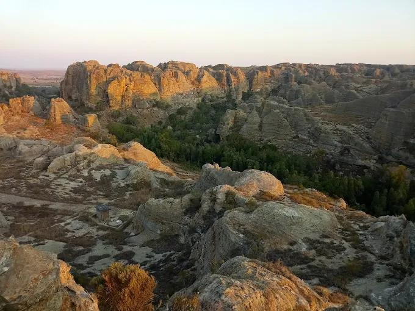
Park Isalo, Ihorombe
Known for its sandstone formations, canyons, and natural swimming pools.
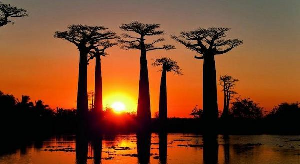
Avenue of the Baobabs Morondava
One of Madagascar's most famous landmarks near Morondava.
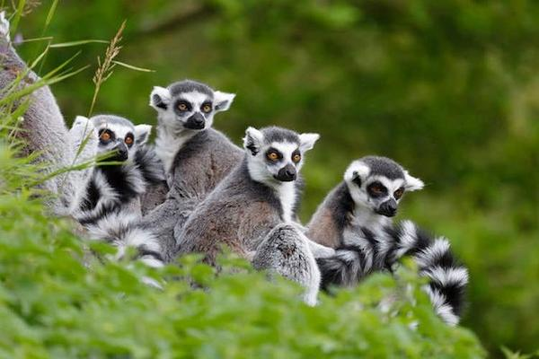
Lemurs' Park Andasibe
One of the best places to see the Indri, the largest living lemur.
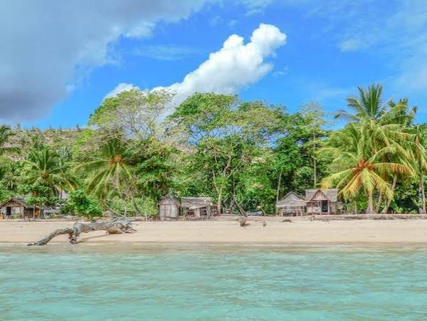
Nosy Sakatia Island Nosy Be
Nosy Sakatia is a small island near Nosy Be, famous for its crystal-clear waters, white sandy beaches, and rich marine life.
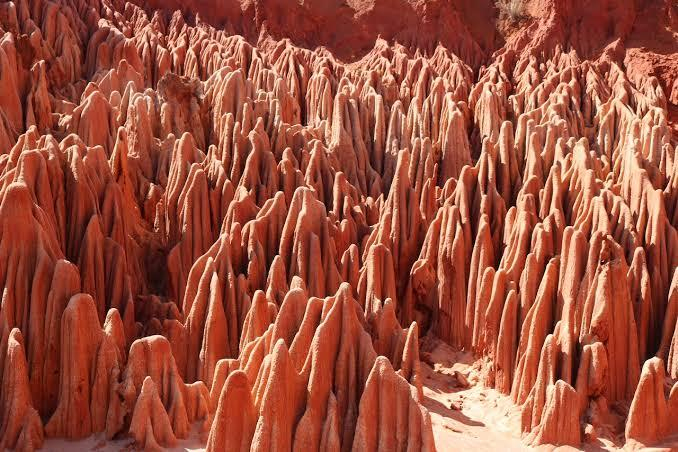
Red Tsingy Park Antsiranana
Unique red rock formations created by erosion.
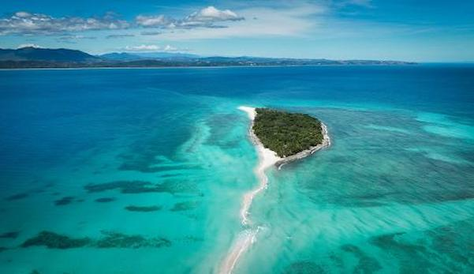
Nosy Iranja Nosy Be
A stunning island connected by a white sandbar at low tide.

The Makay Massif: range of mountain in western Madagascar
The Makay Massif is a remote mountain range located in western Madagascar. Known for its deep canyons, unique wildlife, and untouched landscapes.
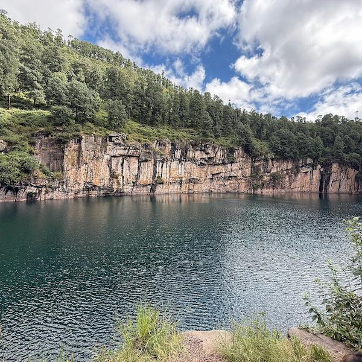
Lake Tritriva Antsirabe
Lake Tritriva is a beautiful volcanic crater lake. It is known for its deep blue waters, mysterious legends, and breathtaking scenery surrounded by rocky cliffs.
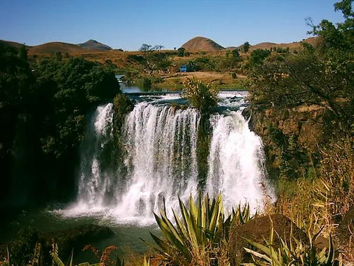
Lily Waterfall Ampefy
Lily Waterfall is one of the most famous waterfalls in Madagascar, visitors enjoy its impressive cascade, lush green surroundings, and peaceful atmosphere.
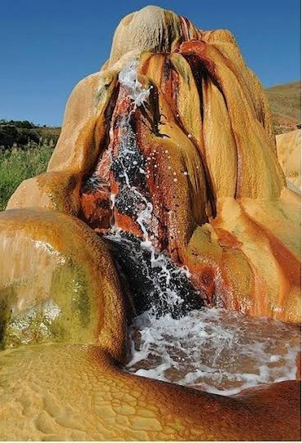
Geyser Amparaky
The Amparaky Geyser is a fascinating natural attraction where hot mineral-rich water rises from underground and sprays into the air.
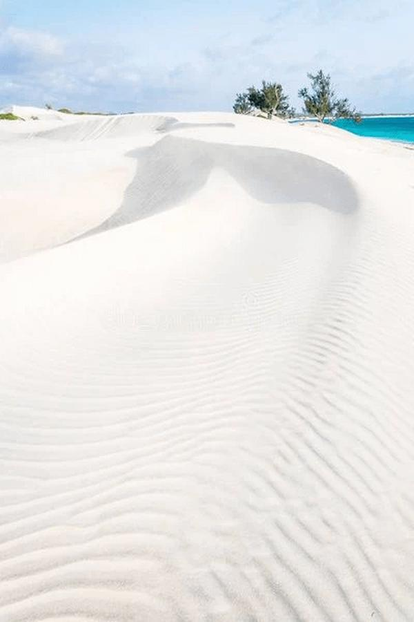
Beach Itampolo
Itampolo beach is a remote, untouched coastal paradise famous for its endless white sand dunes, crystal-clear turquoise waters
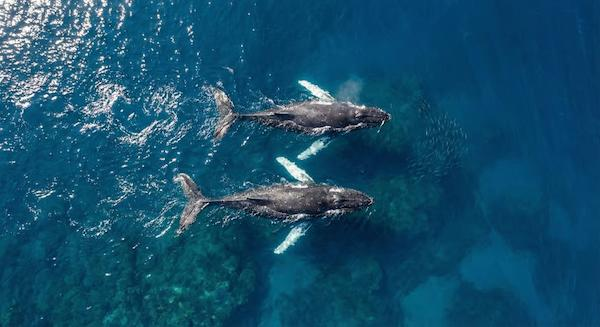
Whale Festival
The Festival des Baleines (Whale Festival) in Madagascar is an annual, week-long celebration held on Île Sainte-Marie (Nosy Boraha)